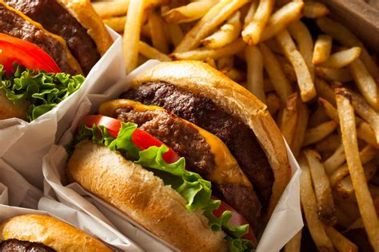
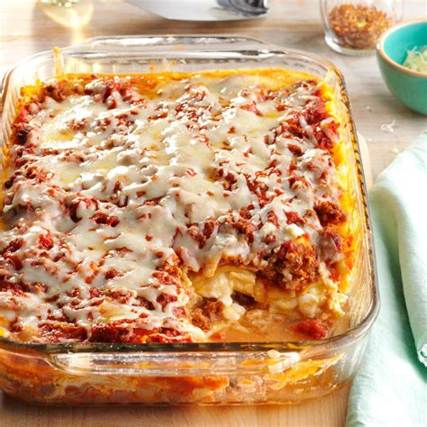

-

An All American Burger
Combine first 5 ingredients, mixing lightly but thoroughly. Shape into 4 patties. Grill burgers, covered, on a greased rack over medium direct heat until a thermometer reads 160° and juices run clear, about 6 minutes on each side.
-

Oven Roaseted Garlic Lasagna
Roasted Garlic White Veggie Lasagna loaded with hearty vegetables and a super savory homemade roasted garlic white sauce. So delicious and fulfilling enough for even the meat eaters of the world! The instructions for Oven Roasting Garlic are attached below, but you should definitely check out this post for additional details!
-

The Linguini
For picky eaters, try serving this easy meat sauce over whimsically shaped pasta, like bow ties, rotini, or wagon wheels.
-

Four Cheddar Cheeseburger Sphagetti
Prepare spaghetti pasta according to package directions.